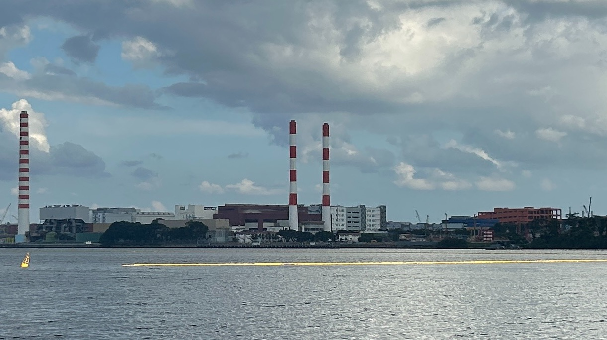
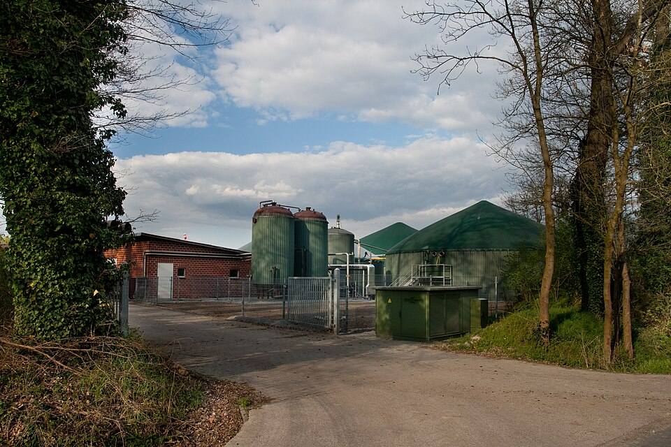

부서 소개
플랜트부 소개합니다
하는 일
하수·폐수처리시설, 정수시설, 폐기물 소각·매립시설, 재활용 선별시설, 음식물류폐기물 처리시설, 분뇨·가축분뇨 처리시설, 하수슬러지 처리시설, 바이오가스화시설 등 다양한 환경기초시설의 토탈엔지니어링(사업 전반에 걸친 종합 기술 서비스)을 수행합니다.
사업구상과 타당성조사부터 인허가, 기본계획, 기본설계, 실시설계, 통합환경인허가, 상세설계까지 사업 전 과정을 종합적으로 지원합니다.
사업제안과 환경 관련 컨설팅 등의 업무를 합니다.
사진으로 보는 환경기초시설
업무 이해를 돕는 시설 예시 사진입니다. 부서의 실제 수행 실적 사진은 아닙니다.
하수·폐수처리시설
오염된 물을 정화하는 환경기초시설입니다.
사진 출처 · Wikimedia Commons (CC0)

소각·에너지회수시설
폐기물을 소각하고 발생하는 열을 에너지로 활용하는 시설입니다.
사진 출처 · Wikimedia Commons (CC0)

바이오가스화시설
음식물·분뇨 등 유기성 폐자원으로 바이오가스를 생산하는 시설입니다.
사진 출처 · Wikimedia Commons (CC0)
매주 반복하는 업무
| 주기 | 업무 내용 |
|---|---|
| 매주 | 환경플랜트에 대한 기술 검토 및 설계 |